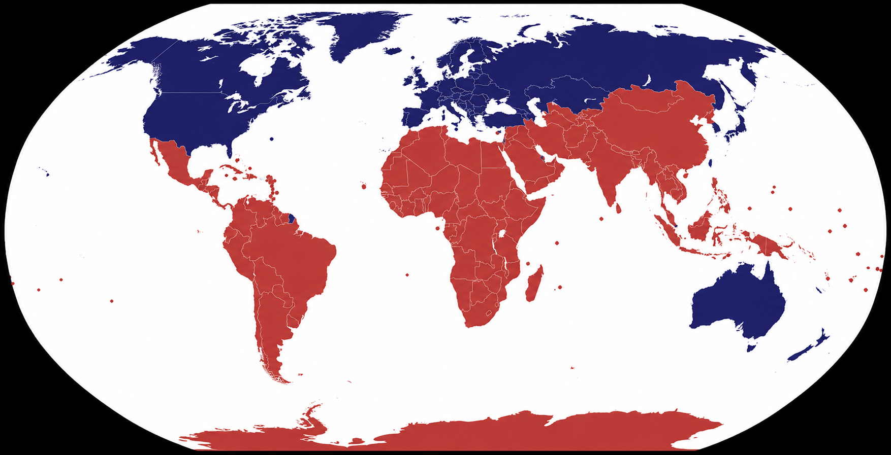

Inequality
The divide shows how wealth, development, and opportunities are unevenly distributed. It reminds us that global progress can leave many people and places behind.
Rethinking global divides and shared responsibility
Globalization connects countries through trade, technology, migration, culture, and shared problems. At the same time, it reveals deep inequalities between the Global North and the Global South.
These divides show that not all countries experience globalization in the same way. Some gain more resources and influence, while others continue to face poverty, dependence, and limited representation.
The divide shows how wealth, development, and opportunities are unevenly distributed. It reminds us that global progress can leave many people and places behind.
Global decisions are often shaped by countries with greater economic and political influence. This affects whose interests are protected in trade, climate, security, and development issues.
Countries are connected, so problems in one region can affect others. Climate change, migration, health, and economic crises show that no country is completely separate from the rest of the world.
Understanding global divides also means recognizing shared responsibility. Countries and communities must work together to respond to inequality and build fairer systems.

Poverty and global problems are not limited to one region. Even developed countries can have communities facing exclusion, poor access to services, and unequal opportunities.
The Global South should also not be seen only as a place of weakness. It can be a source of resistance, solidarity, and alternative models of development that challenge unfair systems and imagine new futures.
Addressing global divides requires cooperation, fair representation, climate responsibility, and respect for the equal worth of all people. These ideas matter because global problems cannot be solved by a few powerful countries alone.
A more equitable future depends on listening to different voices, sharing responsibility, and recognizing universal human equality. The goal is not only to describe the divide, but to work toward a world where development is more just and inclusive.